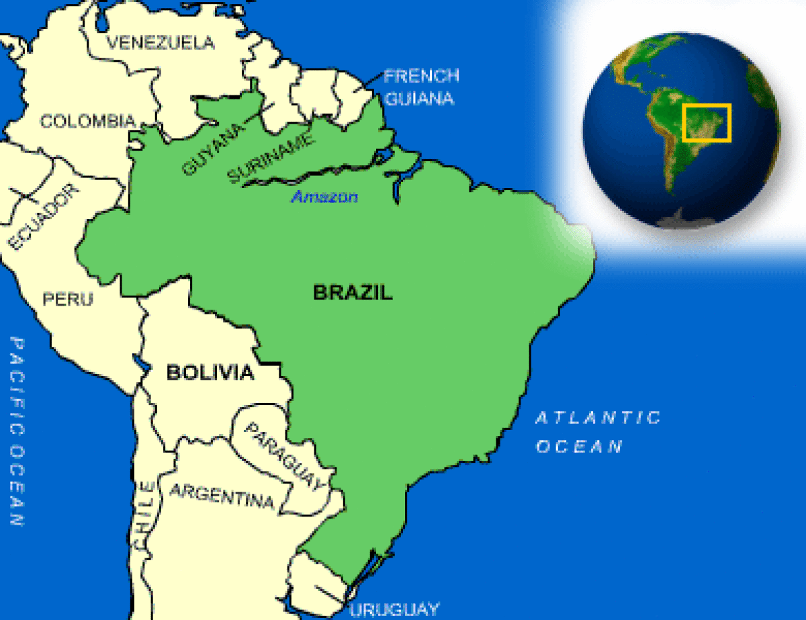

The Wayback Machine - https://web.archive.org/web/20231130204615/https://www.countryreports.org/country/brazil.htm

Where is Brazil located?
What countries border Brazil?

Brazil Weather
What is the current weather in Brazil?
Brazil Facts and Culture
What is Brazil famous for?
- Cultural Attributes: Brazilians often have strong opinions and will argue for their conviction with a vigor that may seem like anger, but... More
- Family: Families are traditionally large and may include the extended family. The elderly who cannot care for themselves live with their... More
- Personal Apperance: Brazilians prefer to wear European fashions, specifically Italian and French, in the cities. The people are very fashion conscious, especially... More
- Recreation: Boys usually play soccer, Girls and boys usually swim as children and many also may play volleyball. Sports are not... More
- Diet: Breakfast usually consists of cafe com leite (coffee with milk), bread, cheese or marmalade, and butter. Lunch and dinner are... More
- Food and Recipes: Brazilians eat in continental style. People wash their hands before eating and refrain from touching food while eating. One's mouth... More
- Visiting: Brazilians enjoy visiting with one another. Their warm climate permits much time outdoors, including socializing outdoors late into the evening... More
- Dating: Group dating starts at about age fourteen. Serious dating and engagements may last as long as two or three years.... More
Brazil Facts
What is the capital of Brazil?
| Capital | Brasilia |
| Government Type | Federal presidential republic |
| Currency | Brazilian Real (BRL) |
| Total Area |
3,287,594 Square Miles 8,514,877 Square Kilometers |
| Location | Eastern South America, bordering the Atlantic Ocean |
| Language |
Portuguese (official and most widely spoken language) Note: less common languages include Spanish (border areas and schools), German, Italian, Japanese, English, and a large number of minor Amerindian languages |
| GDP - real growth rate | -3.3% |
| GDP - per capita (PPP) | $15,200.00 (USD) |
Brazil Demographics
What is the population of Brazil?
| Ethnic Groups | White 53.7%, mulatto (mixed white and black) 38.5%, black 6.2%, other (includes Japanese, Arab, Amerindian) 0.9%, unspecified 0.7% |
| Languages | Portuguese is Brazil's official language. English, German, and French are popular second languages. Although Spanish is also understood by Portuguese speakers, some Brazilians may be offended when deliberately spoken to in Spanish. |
| Nationality Adjective | Brazilian |
| Nationality Noun | Brazilian(s) |
| Population | 211,715,973 |
| Population Growth Rate | 0.83% |
| Population in Major Urban Areas | Sao Paulo 19.924 million; Rio de Janeiro 11.96 million; Belo Horizonte 5.487 million; Porto Alegre 3.933 million; Recife 3.733 million; BRASILIA (capital) 3.813 million |
| Predominant Language |
Portuguese (official and most widely spoken language) Note: less common languages include Spanish (border areas and schools), German, Italian, Japanese, English, and a large number of minor Amerindian languages |
| Urban Population | 84.6% |
Brazil Government
What type of government does Brazil have?
- Executive Branch: Chief of State: President Jair BOLSONARO (since 1 January 2019); Vice President Antonio Hamilton Martins MOURAO (since 1 January 2019);... More
- Suffrage: Voluntary between 16 to 18 years of age, over 70, and the illiterate; compulsory between 18 to 70 years of... More
- Citizenship: Citizenship by Birth: yes Citizenship by Descent: yes Dual Citizenship Recognized: yes Residency Requirement for Naturalization: 4 years More
- National Holiday: Independence Day, 7 September (1822) More
- Constitution: Several previous; latest ratified 5 October 1988; amended many times, last in 2016 More
- Independence: 7 September 1822 (from Portugal) More
Brazil Video
YouTube, Expoza Travel Brazil Guide
Brazil Geography
What environmental issues does Brazil have?
- Overview: Brazil, with a land area of 3.29 million square miles, is slightly larger than the continental U.S. It extends from... More
- Climate: Although Brazil is immense in size and varies in topography from the sweeping sea-level Amazon basin in the north to... More
- Border Countries: Argentina 1,261 km, Bolivia 3,423 km, Colombia 1,644 km, French Guiana 730 km, Guyana 1,606 km, Paraguay 1,365 km, Peru... More
- Environment - Current Issues: Deforestation in Amazon Basin destroys the habitat and endangers a multitude of plant and animal species indigenous to the area;... More
- Environment - International Agreements: Party To: Antarctic-Environmental Protocol, Antarctic-Marine Living Resources, Antarctic Seals, Antarctic Treaty, Biodiversity, Climate Change, Climate Change-Kyoto Protocol, Desertification, Endangered Species,... More
- Terrain: Mostly flat to rolling lowlands in the north; some plains, hills, mountains, and narrow coastal belt More
Brazil Economy
How big is the Brazil economy?
- Economic Overview: Brazil is the eighth-largest economy in the world but is recovering from a recession in 2015 and 2016 that ranks... More
- Industries: Textiles, shoes, chemicals, cement, lumber, iron ore, tin, steel, aircraft, motor vehicles and parts, other machinery and equipment More
- Currency Name and Code: Brazilian Real (BRL) More
- Export Partners: China 18.6%, United States 12.7%, Argentina 6.7%, Netherlands 5.3% More
- Import Partners: China 17.9%, United States 15.6%, Germany 6.1%, Argentina 6% More
Brazil News and Current Events
What current events are happening in Brazil?
Source: Google News
Brazil Travel Information
What makes Brazil a unique country to travel to?
Country Description
The fifth largest country in the world, Brazil is a Portuguese-speaking country with a robust economy. It consists of 26 states and a Federal District. Tourist facilities are excellent in major cities but vary in quality in remote areas.
Crime
Brazilian police and media report that the crime rate remains high in most urban centers, including the cities of Rio de Janeiro and Sao Paulo, and is also growing in rural areas within those states. Brazil's murder rate is more than four times higher than that of the United States, and rates for other crimes are similarly high.Street crime remains a problem for visitors and local residents alike. Foreign tourists, including U.S. citizens, are often targets, especially in Sao Paulo, Rio de Janeiro, Salvador, and Recife. While the risk is greater during the evening and at night, street crime also occurs during the day, and safer areas of cities are not immune. Incidents of theft on city buses are frequent. You should keep a copy of your passport with you while in public and keep your passport in a hotel safe or other secure place. You should also carry proof of your health insurance with you.
The incidence of crime against tourists is greater in areas surrounding beaches, hotels, discotheques, bars, nightclubs, and other tourist destinations. It is especially prevalent prior to and during Carnival (Brazilian Mardi Gras), but also occurs throughout the year. Several Brazilian cities have established specialized tourist police units to patrol areas frequented by tourists.
Use caution when traveling through rural areas and satellite cities due to reported incidents of roadside robberies that randomly target passing vehicles. Robberies and "quicknappings" outside of banks and ATMs occur regularly. In a "quicknapping," criminals abduct victims for a short time in order to receive a quick payoff from the family, business, or the victim's ATM card. Some victims have been beaten and/or raped. You should also take precautions to avoid being carjacked, especially in Sao Paulo, Rio de Janeiro, Recife, and other cities.
In airports, hotel lobbies, bus stations, and other public places, pick pocketing and the theft of hand-carried luggage and laptop computers is common. You should "dress down" when in public and avoid carrying valuables or wearing jewelry or expensive watches. "Good Samaritan" scams are common. If a tourist looks lost or seems to be having trouble communicating, a seemingly innocent bystander offering help may actually be a participant in a scam. Take care at and around banks and ATMs which accept U.S. credit or debit cards. Travelers using personal ATM or credit cards sometimes receive billing statements with unauthorized charges after returning from a visit to Brazil, or discover that their cards were cloned or duplicated without their knowledge. If you use such payment methods, carefully monitor your bank records for the duration of your visit.
While the ability of Brazilian police to help recover stolen property is limited, we strongly advise you to obtain a "boletim de ocorrencia" (police report) at a "delegacia" (police station) if any of your possessions are lost or stolen. This will facilitate your exit from Brazil and assist with insurance claims. Be aware, however, that the police in tourist areas are on the lookout for false reports of theft for purposes of insurance fraud.
Do not buy counterfeit and pirated goods, even if they are widely available. These goods are illegal in the United States, and if you purchase them you may also be breaking local law.
Brasilia: Brasilia has significant crime problems. Reports of residential burglaries continue to occur in the generally affluent residential sections of the city. Public transportation, hotel sectors, and tourist areas report the highest crime rates, but statistics show that these incidents can happen anywhere and at anytime. The "satellite cities" that surround Brasilia have per-capita crime rates comparable to much larger cities. Police reports indicate that rates of all types of crime, including "quicknappings," have risen dramatically in Brasilia in the last two years. Brasilia's Central Bus Station or "Rodoviaria" is a particularly dangerous area, especially at night. This location is known to have a large concentration of drug dealers and users. Illegal drugs such as crack cocaine and "oxi" (a derivative of cocaine base produced with cheaper chemicals) have become very common in the "Plano Piloto" area and satellite cities.
Rio de Janeiro: The city continues to experience high incidences of crime. Tourists are particularly vulnerable to street thefts and robberies in the evening and at night especially in areas adjacent to major tourist attractions. There have been attacks, including shootings, along trails leading to the famous Corcovado Mountain and in other parts of the Tijuca Forest. If robbed, do not attempt to resist or fight back, but rather relinquish your personal belongings. At all times, pay close attention to your surroundings and the behavior of those nearby. There have been reports of thieves and rapists slipping incapacitating drugs into drinks at bars, hotel rooms, and street parties. While crime occurs throughout the year, it is more frequent during Carnival and the weeks prior.
Choose lodging carefully considering location, security, and the availability of a safe to store valuables. Do not answer your hotel room door until you positively confirm who is on the other side. Look out the peephole or call the front desk to confirm the visitor. There have been several recent incidents where mass holdups of guests have occurred at hotels and hostels in the city.
Rio de Janeiro's favelas are a subject of curiosity for many U.S. travelers. A favela pacification program, instituted in 2008, installed police stations in some favelas, primarily in the Zona Sul area. However, most favelas exist outside the control of city officials and police. Travelers are urged to exercise caution when entering any "pacified" favelas and should not go into favelas that are not "pacified" by the state government. Even in some "pacified" favelas, the ability of police to provide assistance, especially at night, may be limited. Several local companies offer "favela jeep tours" targeted at foreign tourists. Be aware that neither the tour company nor the city police can guarantee your safety when entering favelas.
Be vigilant while on the roads, especially at night. There have been shootings and carjackings on the Linha Vermelha that links the airport to the Southern Zone of the city. In Rio de Janeiro, motorists should be especially vigilant at stoplights and when stuck in traffic. Carjackings and holdups can occur at intersections, especially at night. Incidents of crime on public transportation are frequent, and at times have involved violent crimes. When traveling by yellow taxi, tourists are recommended only to use taxis openly displaying company information and phone numbers as well as red license plates. Tourists are also advised not to use public vans.
Visitors should also remain alert to the possibility of manhole cover explosions. There have been multiple manhole cover explosions in Rio de Janeiro in the past few years, with a higher incidence in the Centro and Copacabana neighborhoods.
Report all incidents to Rio's tourist police (DEAT) at (21) 2332-2924. The tourist police have been very responsive to victims and cooperative with the U.S. Consulate General.
Sao Paulo: All areas of Greater Sao Paulo have a high rate of armed robbery of pedestrians and drivers at stoplights and during rush hour traffic. The "red light districts" of Sao Paulo, located on Rua Augusta north of Avenida Paulista and the Estacao de Luz metro area, are especially dangerous. There are regular reports of young women slipping various drugs into men's drinks and robbing them of all their belongings while they are unconscious. Armed holdups of pedestrians and motorists by young men on motorcycles ("motoboys") are a common occurrence in Sao Paulo. Criminals have also begun targeting restaurants throughout the city, frequently between the hours of 10:00 pm and 4:00 am, at establishments in the upscale neighborhoods of Jardins, Itaim Bibi, Campo Belo, Morumbi and Moema. Victims who resist run the risk of violent attack. Laptop computers, other electronics, and luxury watches are the targets of choice for criminals in Sao Paulo.
Efforts of incarcerated drug lords to exert their power outside of their jail cells have resulted in sporadic disruptions in the city, violence directed at the authorities, bus burnings, and vandalism at ATM machines, including the use of explosives. Be aware of your surroundings and exercise caution at all times. Respect police roadblocks and be aware that some municipal services may be disrupted.
As in Rio de Janeiro, favela tours have recently become popular among foreign tourists in Sao Paulo. We advise you to avoid Sao Paulo's favelas as neither the tour company nor the city police can guarantee your safety when entering favelas.
Recife: As in Rio de Janeiro, tourists in Recife should take special care while on the beaches, as robberies may occur in broad daylight. In the upscale Boa Viagem neighborhood, carjackings can occur at any time of the day or night.
Individuals with ties to criminal entities and traffickers operate along all the Brazilian borders. These organizations are involved in the trafficking of illicit goods and drugs. U.S. citizens crossing into bordering countries should consult the Country Specific Information on the relevant nation.
Colombian terrorist groups have been known to operate in the border areas of neighboring countries. Although there have been reports of isolated small-scale armed incursions from Colombia into Brazil in the past, we know of no specific threat directed against U.S. citizens across the border in Brazil at this time.
Colombian groups have kidnapped residents and tourists along the Colombian border. If you are traveling or residing in this area we urge you to exercise caution when visiting remote parts of the Amazon basin, and respect local laws and customs. You should ensure that your outfitter/guide is familiar with the Amazon region.
Criminal Penalties
U.S. citizens are subject to the laws and regulations of any foreign country they are visiting or residing in. Foreign laws and legal systems can be vastly different from our own. Penalties for breaking the law can be more severe than in the United States for similar offenses. Persons violating Brazilian laws, even unknowingly, may be expelled, arrested, or imprisoned. Penalties for possession, use, or trafficking of illegal drugs in Brazil are especially severe, and convicted offenders can expect long jail sentences and heavy fines. The Brazilian judicial process can be slow and cumbersome.There are also some things that might be legal in Brazil, but illegal in the United States. For instance, you can be prosecuted under U.S. law if you buy pirated goods in Brazil. In addition, engaging in sexual conduct with children or using or disseminating child pornography in a foreign country is a crime, prosecutable in the United States. In November 2008, Brazil passed a series of laws designed to strengthen protection of children against sexual exploitation. Brazilian police in tourist areas such as Rio de Janeiro are on the lookout for foreigners inappropriately touching or photographing minors. If you break local laws in Brazil, your U.S. passport will not help you avoid arrest or prosecution.
According to the Vienna Convention on Consular Relations, and customary international law, if you are arrested in Brazil, you have the option to request that the authorities alert the nearest U.S. Embassy or Consulate. We recommend that you carry the contact information for the nearest U.S. Embassy or Consulate with you when traveling.
Languages
Portuguese is Brazil's official language. English, German, and French are popular second languages. Although Spanish is also understood by Portuguese speakers, some Brazilians may be offended when deliberately spoken to in Spanish.
Medical Facilities and Health Information
Medical care is generally good but it varies in quality, particularly in remote areas, and it may not meet U.S. standards outside the major cities. Prescription and over-the-counter medicines are widely available. Emergency services are responsive. Travelers may call a private ambulance company or call 192 and request an ambulance for a public hospital. Callers must stay on the line to provide the location as there is no automatic tracking of phone calls. Other important phone numbers include, Emergency 199, Police 190 and Fire Department 193.Sao Paulo: Expatriates regularly use the Albert Einstein Hospital in Sao Paulo. It is inspected and certified by the Joint Commission International and offers international service assistance. The hospital phone number is 011-55-11-3747-1233.
Rio de Janeiro: In Rio, many expatriates go to Hospital Samaritano (Rua Bambina 98, Botafogo; tel. 2537-9722; ambulance tel. 2535 4000); or Pro-Cardiaco, which specializes in cardiac care but also offers other specialty services (Rua Dona Mariana 219, Botafogo; tel. 2131-1400 or 2528-1442, ambulance tel. 2527-6060).
Information on vaccinations and other health issues in Brazil, such as safe food and water precautions and insect bite protection, may be obtained from the Centers for Disease Control and Prevention's (CDC) hotline for international travelers at 1-877-FYI-TRIP (1-877-394-8747) and their " Yellow Book ". For information about outbreaks of infectious diseases abroad and for general and country specific health information for travelers, consult the World Health Organization (WHO).
General Vaccinations: All travelers should visit either their personal physician or a travel health clinic 4-8 weeks before departure, as some vaccines and malaria prophylaxis must be given a few weeks before travel. All travelers to Brazil, and those transiting the country, should have prior vaccinations for Hepatitis A, typhoid, and Hepatitis B. Routine immunizations including MMR (measles, mumps, rubella), Tdap (tetanus, diphtheria, and pertussis), and varicella should be up to date. Neither cholera nor polio vaccines are recommended except under specific circumstances. Consult the Yellow Book for more information.
Insect-borne Illnesses: Insect-borne illnesses are common in Brazil, principally yellow fever, malaria, leishmaniasis, and dengue. Vaccination is available to prevent yellow fever, and prophylactic medication can be used to lower the risk of malaria. Chagas disease (a/k/a American trypanosomiasis ) transmission has been eliminated in every state except Bahia and Tocantins through an aggressive program of insecticide spraying.
The first-line of protection against all insect bites is the use of insect repellents (less than or equal to 30% DEET content for children above two months of age), but mosquito nets, mosquito coils, aerosol sprays, protective clothing, use of screens, or staying in air-conditioned environment when available are also alternatives.
Dengue: There is no vaccine for dengue. Dengue usually presents fever, rash, and body aches, or there are no symptoms and clears relatively quickly; however, it can be rapidly fatal in a minority of severe cases. Consult CDC Yellow Book for the signs and symptoms of severe dengue.
Malaria: Malaria is present throughout the year in forested areas of the Amazon region, but it tends to be seasonal (southern summer) elsewhere in the country; mostly on the periphery of cities and towns in the Amazon region. There is little to no risk of malaria in other areas of Brazil.
Yellow Fever: The yellow fever vaccine is recommended for travelers over nine months of age to the states of Acre, Amapá, Amazones, Distrito Federal (including the capital city of Brasília), Goiás, Maranhão, Mato Grosso, Mato Grosso do Sul, Minas Gerais, Pará, Rondônia, Roraima, Tocantins, and designated areas of the following states: Piauí, Bahia, São Paulo, Paraná, Santa Catarina, and Rio Grande do Sul. The vaccine is also recommended for travelers visiting Iguaçu Falls. Daytime insect precautions are essential for unvaccinated travelers.
Yellow fever vaccine is not recommended for itineraries limited to the cities of Rio de Janeiro, São Paulo, Salvador, Recife, or Fortaleza, or any other areas not listed above. Travelers over age 65 should consult with their physician prior to receiving yellow fever vaccination.
Rabies: The rabies vaccination is recommended for prolonged stays, with a priority for children and those planning rural travel. For shorter stays, rabies vaccination is recommended for adventure travelers, those with occupational exposure to animals, and those staying in locations more than 24 hours from access to rabies immune globulin.
Travelers' Diarrhea (TD): Travelers' diarrhea is the most common travel-related ailment. The cornerstone of prevention is food and water precautions: (1) do not drink tap water unless it has been boiled, filtered, or chemically disinfected and (2) do not drink unbottled beverages or drinks with ice. Do not eat raw or undercooked meat or fish, including ceviche. The most important treatment measure for TD is rehydration, best performed with oral rehydration solution available in almost all pharmacies in Brazil.
Tuberculosis: Brazil is a high-burden country for tuberculosis, but short-term travelers are not considered at high risk for infection unless visiting crowded environments such as hospitals, prisons, or homeless shelters. If you are at risk, consult with your health care provider or travel health clinic for possible use of tuberculin skin testing before and after returning from Brazil.
Elective Surgery: Plastic and other elective/cosmetic surgery is a major medical industry in Brazil. While Brazil has many plastic surgery facilities that are on par with those found in the United States, the quality of care varies widely. If you are planning to undergo plastic surgery in Brazil, make sure that emergency medical facilities are available. Some "boutique" plastic surgery operations offer luxurious facilities but are not hospitals and are therefore unable to deal with emergencies.
Non-traditional Medicine: Several U.S. citizens have died while visiting non-traditional healers outside of urban areas. While this is not surprising given that this type of treatment often attracts the terminally ill, U.S. citizens are advised to ensure they have access to proper medical care when visiting such sites.
Safety and Security
Demonstrations and political/labor strikes are common in urban areas and may cause temporary disruption to public and private transportation. While the protests have not been directed at U.S. citizens, there have been incidents of vandalism which have affected U.S. government facilities. In some cases, Brazilian police have used tear gas, riot control, and mounted units to disperse protestors. If you become aware of protests in your vicinity, you should remain indoors and close doors and windows. U.S. citizens in Brazil are urged to monitor local news reports and to plan their activities accordingly.Protests anywhere in the world have the potential to become violent. Even demonstrations or events intended to be peaceful can turn confrontational and possibly escalate into violence. U.S. citizens traveling or residing in Brazil are advised to take common-sense precautions, avoid large gatherings or other events where crowds have congregated to demonstrate or protest, and comply with the instructions of local authorities. Check the website of the Embassy or consulate nearest you for current information on demonstrations.
Traffic Safety and Road Conditions
While in Brazil, U.S. citizens may encounter road conditions that differ significantly from those in the United States. The information below concerning Brazil is provided for general reference only and may not be totally accurate in a particular location or circumstance.Travelers should consider obtaining an Inter-American Driving Permit to carry along with their valid U.S. license if they plan to drive while in Brazil. Such permits can be obtained through AAA or other sources.
Driving on Brazil's inter-city roads can pose significant risks. As is the case elsewhere in the region, poor driving skills, bad roads, and a high density of trucks combine to make travel via roads considerably more hazardous than in the United States.
There are no laws requiring truckers to take mandatory rest stops and they often drive for excessive periods of time. All major inter-city routes are saturated with heavy truck traffic and for the most part have only two lanes.
Road maintenance is inadequate and some long-distance roads through the Amazon forest are impassable much of the year. Private cars and public buses are the main modes of inter-city road travel. Buses can range (depending on the route and the price) from luxurious and well-maintained to basic and mechanically unsound. Bus hijacking, usually non-violent, occurs at random in some areas of the country.
Apart from toll roads, which generally have their own services, roadside assistance is available only very sporadically and informally through local private mechanics. The fastest way to summon assistance in an emergency anywhere in the country is to dial 193, a universal number staffed by local fire departments. This service is in Portuguese only. Many motorists in major urban areas and more developed parts of the country carry cellular phones, and can be asked to assist in calling for help.
Traffic Laws: There are severe penalties for a number of traffic offenses. If you are involved in an accident that results in injuries or death, you may be fined for compensatory and punitive damages, as well as charged with criminal penalties.
Enforcement of traffic laws ranges from sporadic to non-existent, so motorists should not assume that others will necessarily follow even the most fundamental and widely-accepted rules of the road. Some important local rules and customs include the following:
Seatbelts / Child Car Seats: Brazil requires the use of seatbelts for everyone in the car. Brazilian federal law requires car seats for all children under the age of 7 ½. From age 7 ½ years to 10, children cannot ride in the front seat of the car, and must be in the back seat wearing a seatbelt.
Speed Limits: The maximum speed limit on major, divided highways is 120 kmph (74 mph). Lower limits (usually 60 kmph or 40 mph) are often posted in urban areas depending on the road and the nature of the neighborhood. Speed limits are widely ignored and rarely enforced. However, an increasing number of towns and cities have electronic/photographic devices (marked "Fiscalizacao Eletronica") which verify speed and take photos of violators' cars and license plates as a basis for issuing speeding tickets. Brazilian drivers tend to brake suddenly when encountering these devices. Many cities and towns have erected speed bumps, which are sometimes severe and may be unpainted and unmarked.
Yielding the Right of Way: Drivers must yield the right of way to cars on their right. Compliance with stop signs is rarely enforced, so many motorists treat them as yield signs.
Driving Under the Influence: Drivers with any measurable content of alcohol in their blood are in violation of the law. Checkpoints are often set up in urban areas where randomly chosen drivers are required to exit their vehicles and perform a breathalyzer test.
Local Driving Customs: Drivers often use flashes or wave a hand out of the window to signal other drivers to slow down. In addition, pedestrian "zebra" crossings are strictly observed in some places (especially in Brasilia) and ignored most everywhere else.